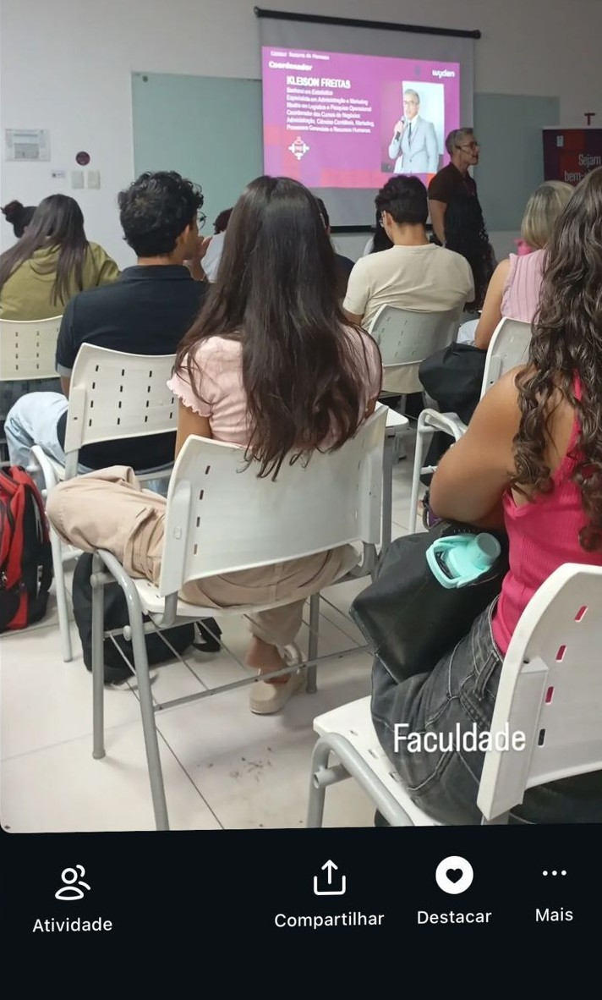
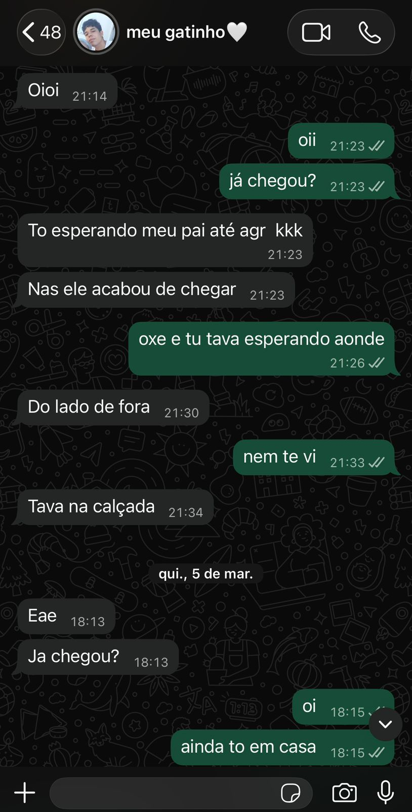
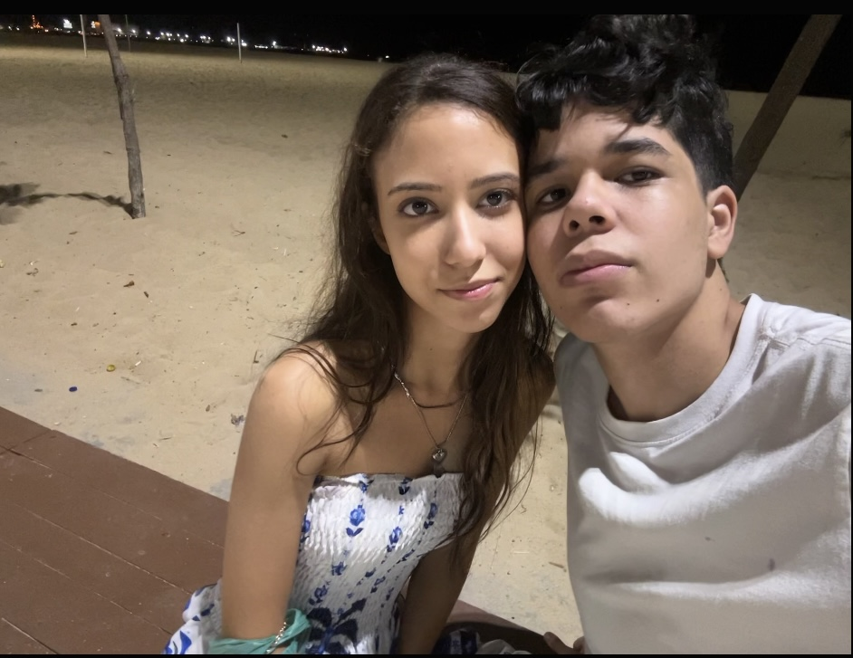
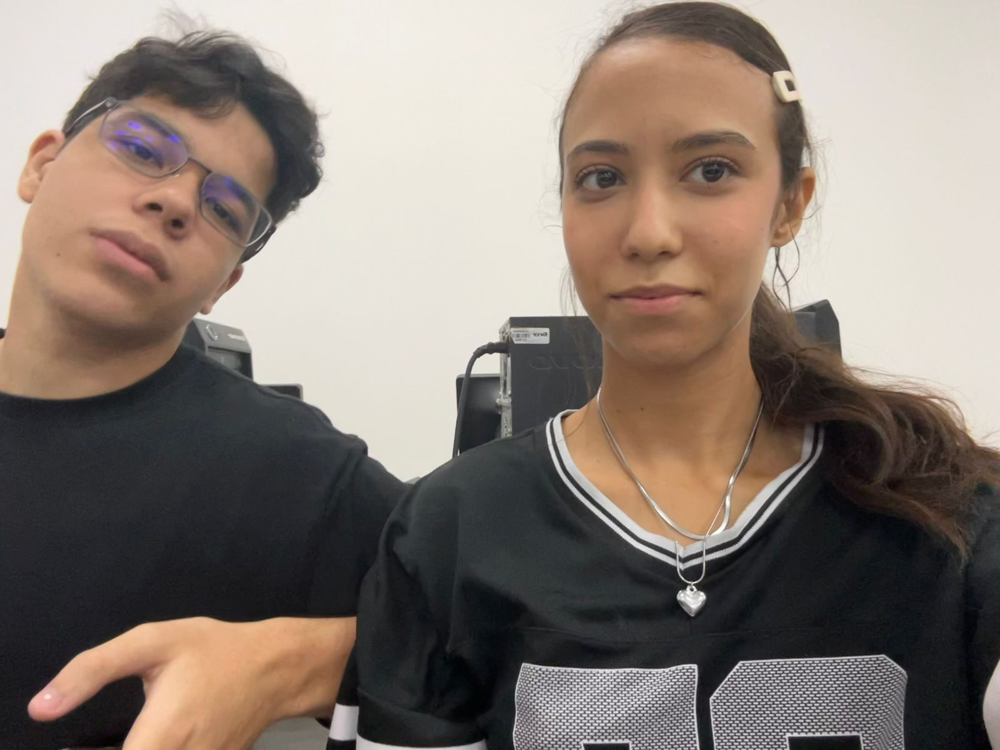
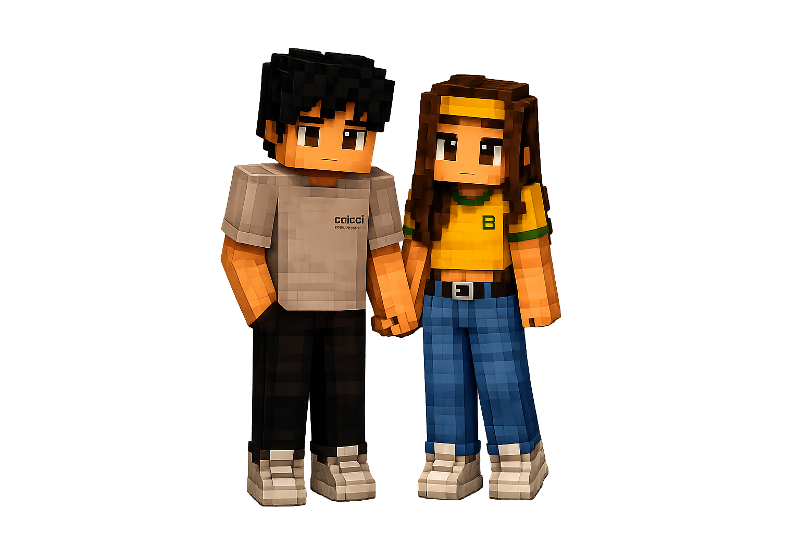

Carregando nosso tempo juntos...
No dia de apresentar a Unifanor e receber os novatos, várias pessoas de vários cursos diferentes ficaram na mesma sala. Você bateu uma foto da sala pra postar no instagram mostrando seu primeiro dia na faculdade, e eu apareci na foto bem na sua frente, nesse dia a gente não se conheceu.

No primeiro dia oficial de aula, a gente se conheceu sentamos juntos e já trocamos número kkk Foi tudo muito rápido mas a gente se considerava apenas colegas. E essa é nossa primeira interação no Whatsap.

Você lembra como eu tava nervosa nesse dia? kkkk e te pedi pra comprar vinho pra me soltar mais, so que na hora do nosso primeiro beijo eu tive crise de riso e vergonha.

Dia que a gente se "assumiu" no instagram, muita gente na minha dm já perguntando se eu tava namorando (a gente só ficava

Passamos o dia juntos comprando roupa e depois fomos pra bm ver nossas alianças.
A gente ja tava praticamente namorando, mas o pedido oficial veio nesse dia lindo que a gente tirou pra visitar a bece e o dragão do mar.
A gente deixa no off. ❤️ Algumas histórias não precisam ser contadas em detalhes para serem especiais. O importante é tudo o que vivemos desde aquele primeiro encontro até o dia em que decidimos escrever um capítulo novo juntos. Mas se quiser encontrar alguns outros momentos clicka no casal de mine e da uma olhadinha no que eu preparei com muito carinho.
Saiba que eu te amo muito, meu bem. ❤️
